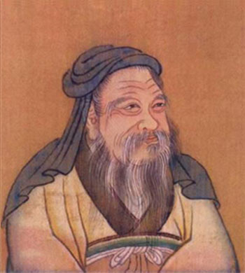

“元圣”周公简介
周公，姓姬，名旦，是周文王姬昌第四子、周武王姬发的弟弟、周成王姬诵的叔父，因其采邑在周，爵为上公，故称周公。周公为西周政权的建立巩固和政治制度的创立做出了突出贡献，被后世尊称为“元圣”。
西周初年，周公被分封于鲁。但因周公在镐京辅佐周成王，故派长子伯禽就封，建立鲁国。因周公佐周之殊功，特许伯禽于鲁设立太庙（即曲阜周公庙），以祀远祖。
其主要思想为：
以德配天的哲学思想。周公总结并吸取了夏代、商代灭亡的教训，提出了“以德配天”的君权神授说。周公认为，“惟命不于常，道善则得之，不善则失之矣”，“上天”只会把统治人间的“天命”交给那些有“德”者，只有有德者才可承受天命，失德就会失去“天命”。这一思想体现了周公天命哲学的理性精神。
敬德保民的民本思想。“皇天无亲，惟德是辅”，有德才能“祈天永命”，所以要“敬德”。“民之所欲，天必从之”，所以要“保民”，“保民”实际上就是保社稷、保国家，要“顺乎天而应乎人”。周公提出“敬德保民”，是夏商以来从“敬鬼神”到“重人事”的一大转变。
明德慎罚的德治思想。“明德”，就是提倡尚德、敬德，它是慎罚的指导思想和保证。“慎罚”，就是刑法适中，不乱罚无罪，不乱杀无辜。周公在中国历史上第一次明确地把“德”与“刑”结合起来，对后世儒家“德主刑辅”思想的形成产生了极大的影响。
礼乐教化的政治思想。周公制礼作乐，把礼和乐作为安邦治国的两种方式。“礼”强调的是“秩序”，要解决的是天、地、人各安其位的问题；“乐”强调的是“和顺”，要解决的是人心归属的问题。周公设立的周代礼制主要包括：嫡长子继承制，以封邦建国为标志的分封制，宗统与君统相统一的宗法制，处理中央与地方诸侯关系的“畿服制”，以及天子登基之礼、策命礼仪、祭祀礼仪、军礼等等。

-- 中共山东省委组织部主办 --
Copyright 2013-2017 中共山东省委组织部 All rights reserved
鲁ICP备09016644号-3 地址 : 山东省济南市 技术服务热线 : 400-690-7927